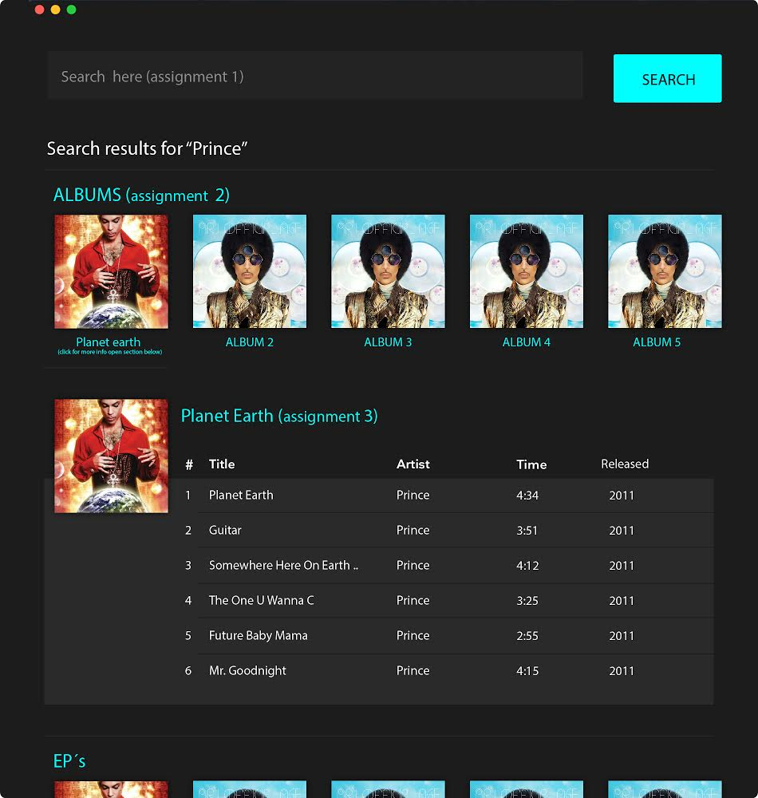
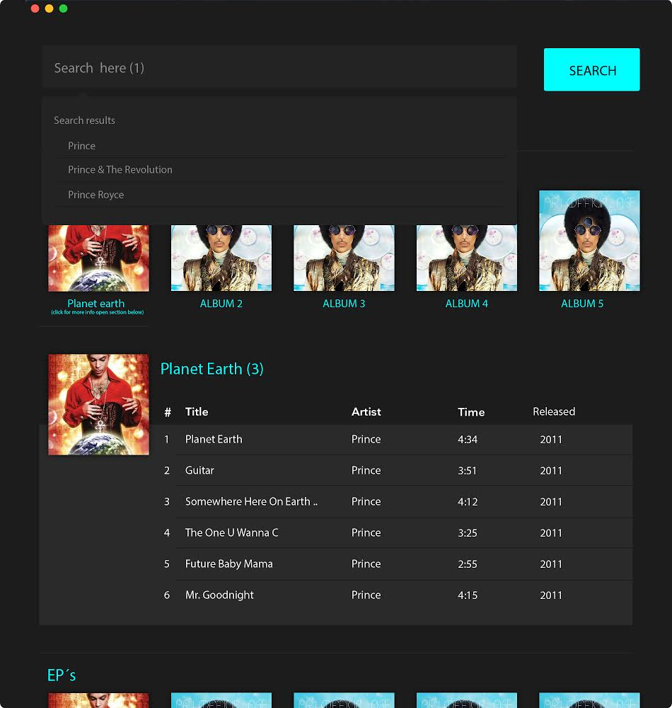

- Create an autocomplete search for artist that populates a option list while you type - marked with (1) in the design asset.
- When clicking on an item in the result set you should present and list the ALBUMS for that artist as displayed in the attached design - marked with (2) in the design asset.
- When clicking an ALBUM you should expand a field like the one in the design under the headline :Planet Earth and list information from the album - marked with (3) in the design asset.
Utilize the Deezer API to perform the tasks above using Backbone.js

